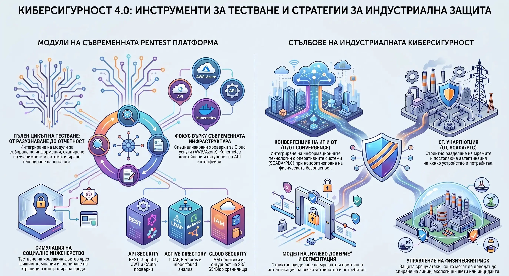

Security Operations · Threat Hunting · Анализ
Threat hunting: какво е и как се провежда?
Threat hunting е проактивно търсене в наличните security данни, водено от въпрос или хипотеза за активност, която може да не е задействала съществуваща детекция. Целта е да се провери дали има основание за разследване и да се подобри видимостта, а не да се обещае откриване на всяка скрита заплаха.

⚠️ Важна бележка: Тази публикация е с информационна и образователна цел и не представлява юридическо или правно тълкуване на приложимото законодателство. Обстоятелствата варират, а нормативните изисквания се променят. При конкретен казус се консултирайте с квалифициран юрист.
Накратко: изберете риск или наблюдение, формулирайте проверима хипотеза, определете scope и нужната telemetry, потърсете и валидирайте следи, документирайте резултата и превърнете новите знания в incident escalation, detection или подобрение на покритието.
Какво е threat hunting?
Threat hunting е целенасочено проучване на данни от endpoints, identity системи, мрежа, email, cloud или други източници, за да се потърсят признаци на поведение, което заслужава внимание. То може да започне от threat intelligence, промяна в средата, резултат от предишен инцидент, видима telemetry gap или въпрос за конкретна техника.
MITRE ATT&CK е knowledge base от тактики и техники, базирани на наблюдения от реалния свят. Екипите могат да го използват като речник за моделиране на хипотези и търсене, но ATT&CK не е готова заявка, гаранция за покритие или единен threat hunting playbook.
Threat hunting и SOC мониторинг не са едно и също
| Дейност | Как започва | Типичен фокус |
|---|---|---|
| Мониторинг | Постоянни източници, правила и аларми в договорения scope. | Обработка на събития и alerts, triage, ескалация и наблюдение на покритието. |
| Threat hunting | Въпрос, хипотеза или конкретен риск, който екипът иска да провери в наличните данни. | Търсене на следи, проверка на контекста и намиране на telemetry или detection gaps. |
| Incident response | Подозрение или потвърден инцидент, който изисква координирано управление. | Оценка, containment, комуникация, отстраняване и възстановяване според плана. |
Дейностите могат да се допълват и да се изпълняват от един SOC или security екип, но не са взаимозаменяеми. Threat hunt може да е насочен и към проверка на устойчивостта на detections, докато alert triage отговаря на конкретен сигнал.
Пример: формулирайте проверима хипотеза
Хипотеза: „На администраторски работни станции може да има необичайно изпълнение на скриптове извън очакваните maintenance прозорци, което не е свързано с познатите deployment инструменти.“
Преди заявка уточнете какво би подкрепило или отслабило тази хипотеза: кои endpoints са в scope, кой процес/родител и user context са релевантни, какъв период се изследва, кои deployment задачи са легитимни и какви данни са налични. ATT&CK може да помогне при терминологията за техники, но конкретните критерии трябва да отговарят на средата и данните.
Работен цикъл за threat hunt
- Изберете приоритет. Тръгнете от риск, threat intelligence, инцидентен lesson learned, подозрителна аномалия или неизвестно покритие.
- Запишете хипотезата и scope-а. Определете какво проверявате, кои активи/потребители и период са включени, кой води работата и какво би довело до ескалация.
- Проверете наличните данни. Потвърдете източници, времеви обхват, retention, синхронизация на часовници, полета и достъп; документирайте пропуските преди да тълкувате липсата на резултати.
- Потърсете и обогатете. Използвайте одобрени заявки и сигнали от endpoint, identity, network, email или cloud системи, когато те са достъпни; добавяйте контекст за активи, owners и известни легитимни промени.
- Валидирайте кандидатите. Разгледайте timeline и свързани събития, проверете алтернативни обяснения и отделете наблюдаваните факти от работните хипотези.
- Определете резултата и следващото действие. Ескалирайте вероятен инцидент по IR процеса; ако дейността е легитимна, запишете основанието; ако покритието не позволява отговор, посочете нужната telemetry.
- Подобрете detections и повторете. При подходящи находки създайте или настройте детекция, добавете тестове, коригирайте logging/coverage и планирайте повторна проверка.
Какви данни могат да помогнат?
Източниците зависят от хипотезата и средата; повече данни не гарантират по-добър резултат, ако контекстът, качеството или обхватът са неясни.
- Endpoint/EDR: процеси, command-line context, файлови и системни събития и agent health, според конфигурацията.
- Identity: authentication, account changes, роли и sign-in събития, когато се логват и са достъпни.
- Network: DNS, firewall, proxy или други наблюдения в рамките на наличното покритие и retention.
- Email и collaboration: сигнали за съобщения, attachments, URLs и последващи действия, ако инструментите ги предоставят.
- Cloud и приложения: control-plane, workload и application logs със съгласуван scope и достъп.
- Asset/configuration inventory: owners, критичност, роли и базова линия, които помагат да се различат очаквани промени от аномалии.
Работете само с данни, до които организацията има право на достъп, и спазвайте вътрешните правила за privacy, retention и least privilege. Hunting заявките трябва да са scoped, документирани и пропорционални на конкретната цел.
Как да оцените резултата?
Не измервайте качеството само с броя „намерени заплахи“. Полезни сигнали са колко хипотези са проверени, кои критични източници са липсвали, колко кандидат-събития са валидирани, какви detections или logging подобрения са внедрени и дали повторната проверка потвърждава промяната.
Записвайте обхвата, времевия период, заявките или логиката на търсене, източниците, ограниченията, наблюдаваните факти, заключенията и действията. Така резултатът може да бъде повторен и прегледан от друг анализатор.
Ограничения и чести грешки
- Липса на telemetry: неоткрит резултат не доказва отсъствие на активност, ако нужните събития не се събират или retention периодът е изтекъл.
- Неясна хипотеза: твърде широко „потърси нещо подозрително“ трудно се проверява и документира.
- Потвърждаващо търсене: избиране само на данни, които подкрепят първоначалната версия, без проверка на легитимни алтернативи.
- Объркване между факт и извод: корелация или единичен индикатор сами по себе си не доказват компрометиране.
- Действия извън процеса: hunting не дава автоматично разрешение за изолиране, блокиране на акаунт или промяна в production.
- Липса на feedback: заключението не се превръща в detection, telemetry improvement или инцидентна ескалация.
Често задавани въпроси
Какво е threat hunting?
Threat hunting е проактивно и хипотезно изследване на налични security данни за признаци на подозрителна активност, която може да не е довела до alert. То допълва, но не заменя мониторинга и incident response.
Threat hunting същото ли е като SOC мониторинг?
Не. Мониторингът обичайно обработва събития и alerts според постоянни правила и покритие; hunting е ограничено проучване, водено от конкретен въпрос или хипотеза. Екип може да извършва и двете дейности.
Какво е нужно, за да започне threat hunt?
Нужни са ясен scope и хипотеза, отговорник, подходящо запазена и достъпна telemetry, инструменти за заявка и процес за ескалация, ако се открие вероятен инцидент.
Ако hunt не намери заплаха, значи ли че няма компрометиране?
Не. Резултатът важи за зададения scope, период и налични данни. Липсваща telemetry, retention ограничения или неизвестни поведения могат да оставят слепи петна.